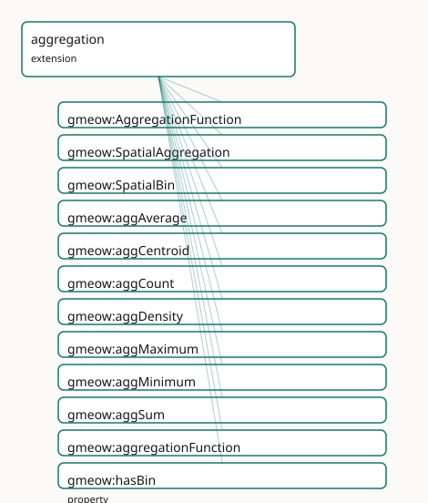

GMEOW Spatial Aggregation Module
- IRI: https://blackcatinformatics.ca/gmeow/slices/aggregation
- Tier: extension
Group: extensions
What This Slice Covers
This slice owns 13 terms and contributes 4 mapping or projection rows. Use it when its terms match the native fact you want to preserve; use the linkage tables to see how those facts leave GMEOW for consumer vocabularies.
Dependencies
Consumers
- Spatial aggregation (count, density, k-anonymity) in the solver layer over places.
Local Map

Terms
Classes
| Term | Label | Definition |
|---|---|---|
gmeow:AggregationFunction |
Aggregation Function | The kind of statistical aggregation applied to a spatial region — a value vocabulary (individuals, never subclasses). |
gmeow:SpatialAggregation |
Spatial Aggregation | A measurement that aggregates entities located within a spatial region, yielding a scalar result such as a count, density, or average. The aggregation region i... |
gmeow:SpatialBin |
Spatial Bin | A place that serves as a spatial bin in an aggregation grid — a generated region used to partition space for statistical summarisation. Its geometry defines th... |
Properties
| Term | Label | Definition |
|---|---|---|
gmeow:aggregationFunction |
aggregation function | The statistical function applied to the entities in the aggregation region — count, sum, average, density, minimum, maximum, or centroid. |
gmeow:hasBin |
has bin | Links a spatial aggregation to one of its constituent spatial bins. Non-functional: a bin may participate in multiple aggregations. |
gmeow:minimumPopulation |
minimum population | The minimum population size (k) required for the aggregation result to be disclosed — the k-anonymity parameter. A result failing this check is suppressed at p... |
Individuals
| Term | Label | Definition |
|---|---|---|
gmeow:aggAverage |
average | The arithmetic mean of a numeric property over entities within the aggregation region. |
gmeow:aggCentroid |
centroid | The geometric centre of the aggregation region or of the entities within it. Computed by the solver layer (Principle 12). |
gmeow:aggCount |
count | The number of entities within the aggregation region. |
gmeow:aggDensity |
density | The number of entities per unit area within the aggregation region. Computed by the solver layer (Principle 12). |
gmeow:aggMaximum |
maximum | The largest value of a numeric property over entities within the aggregation region. |
gmeow:aggMinimum |
minimum | The smallest value of a numeric property over entities within the aggregation region. |
gmeow:aggSum |
sum | The arithmetic sum of a numeric property over entities within the aggregation region. |
Linkages
- Rows: 4
- Projection profiles:
qb - External vocabularies:
qb,rdf
| Source | Kind | Profile | Predicate/Relation | Target | Evidence |
|---|---|---|---|---|---|
gmeow:AggregationFunction |
equivalence | - |
skos:closeMatch | qb:MeasureProperty | gmeow-aggregation.sssom.tsv; gmeow:eqAgg003; confidence 0.8 |
gmeow:SpatialAggregation |
equivalence | - |
skos:closeMatch | qb:Observation | gmeow-aggregation.sssom.tsv; gmeow:eqAgg001; confidence 0.8 |
gmeow:SpatialAggregation |
projection | qb |
projects to / <= | gmeow:observedFeature, qb:ComponentSpecification, qb:DataSet, qb:DataStructureDefinition, qb:DimensionProperty, qb:MeasureProperty, qb:Observation, qb:component, qb:dataSet, qb:dimension, qb:measure, qb:measureType, qb:obsValue, qb:structure, rdf:type |
gmeow:mapQbObservation; lossy: vantage, confidence, temporal scope, granularity, determinacy, and k-anonymity metadata are dropped in pure QB; only the measure type (function), observation value (scalar), and spatial context (observedFeature) are retained. A well-formed qb:DataSet and qb:DataStructureDefinition are emitted per observation. Suppressed when displayable=false (Principle 10). |
gmeow:aggregationFunction |
projection | qb |
projects to / <= | gmeow:observedFeature, qb:ComponentSpecification, qb:DataSet, qb:DataStructureDefinition, qb:DimensionProperty, qb:MeasureProperty, qb:Observation, qb:component, qb:dataSet, qb:dimension, qb:measure, qb:measureType, qb:obsValue, qb:structure, rdf:type |
gmeow:mapQbObservation; lossy: vantage, confidence, temporal scope, granularity, determinacy, and k-anonymity metadata are dropped in pure QB; only the measure type (function), observation value (scalar), and spatial context (observedFeature) are retained. A well-formed qb:DataSet and qb:DataStructureDefinition are emitted per observation. Suppressed when displayable=false (Principle 10). |
Guide
Aggregation — spatial summarisation as honest measurement
Slice:
https://blackcatinformatics.ca/gmeow/slices/aggregation· tier: extension Count, sum, average, density, centroid, and binning over places — every summary a claim.
A statistic is not a fact about the world; it is a measurement somebody made of a region.
This slice therefore adds almost nothing — and that is its doctrine. Every aggregation is a
gmeow:Measurement in the universal observation stack, so vantage, observed feature,
result, confidence, granularity, and temporal scope are inherited without duplication
(Principle 4: one observation spine, reused everywhere). The aggregation region is the
observedFeature; the result is a gmeow:ScalarQuantity. The actual arithmetic —
counting, density, centroid, binning — is performed by the solver layer (Principle 12),
never materialised as asserted triples in the OWL core. The slice realises the
Location-as-reference-frame epic and the cross-cutting aggregation concern.
Its Principle-15 consumer, declared in the manifest: spatial aggregation (count, density, k-anonymity) in the solver layer over places — the slice exists so the solver has typed, provenance-bearing nodes to hang its computed summaries on.
Privacy is the projection layer's job, not a parallel mechanism: gmeow:coarsenTo,
gmeow:displayable false, and gmeow:hasSensitivity govern whether and at what
granularity a result may be published (Principle 10 — suppress or coarsen at projection
time, never delete). The k-anonymity check itself is a solver computation.
The aggregation node
gmeow:SpatialAggregation
A Measurement subkind whose observedFeature is a Place and whose observationResult
is a ScalarQuantity. Because it is a measurement, a published census count and a rival
survey estimate over the same region are two coexisting, vantage-bearing aggregations —
no privileged figure (Principle 9). Pair with gmeow:hasReferenceFrame (the spatial
frame, Principle 11) and gmeow:hasGranularity from the reused core spine.
gmeow:aggregationFunction
Functional pointer from a SpatialAggregation to the statistical function applied —
exactly one function per aggregation node; a region summarised two ways is two
aggregations.
gmeow:AggregationFunction
The open value vocabulary of functions (Principle 9 — individuals, never subclasses):
seeds aggCount, aggSum, aggAverage, aggDensity, aggCentroid, aggMinimum,
aggMaximum. Density and centroid are explicitly solver-computed; the others summarise a
numeric property over the entities in the region. A new function is a fresh individual,
not a schema change.
Binning
gmeow:SpatialBin
A Place subkind: a generated region that partitions space for summarisation — a grid
cell, a hex bin, a census tract. Its geometry (from the places slice) defines the bin
boundary; being a Place, it participates in RCC-8, reference frames, and granularity like
any other region. Bins are infrastructure, not discoveries.
gmeow:hasBin
Links a SpatialAggregation to its constituent bins. Non-functional in both directions:
an aggregation may span many bins, and a bin may serve many aggregations (the same hex
grid reused across years of data).
The privacy gate
gmeow:minimumPopulation
The k-anonymity parameter, carried on the aggregation itself: the minimum population size
(k) required for the result to be disclosed. A result failing the check is suppressed at
projection time — coarsened via coarsenTo or withheld via displayable false
(Principle 10) — never deleted. The threshold comparison ("publish only if count >= k")
is evaluated by the solver layer (Principle 12); the OWL core records the policy, not the
verdict.
Reuse, not redefinition
The slice deliberately redeclares nothing: observedFeature, observationResult, and
vantage come from observations; hasReferenceFrame from places; hasGranularity,
hasSensitivity, and coarsenTo from core; displayable from names. The module lists
them as a documentation-only reuse block — duplication would violate Principle 4.
Dependencies
Depends on observations (the Measurement spine) and places (Place, geometry, frames).
Consumed by the solver layer; no other slice depends on it — aggregation is a terminal
extension by design.